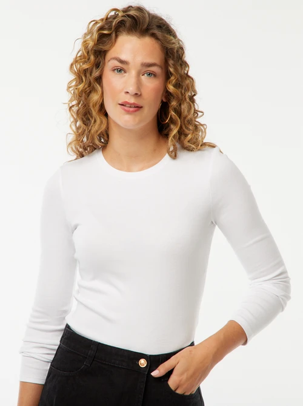
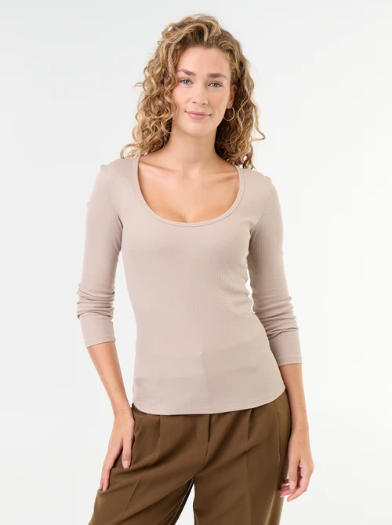
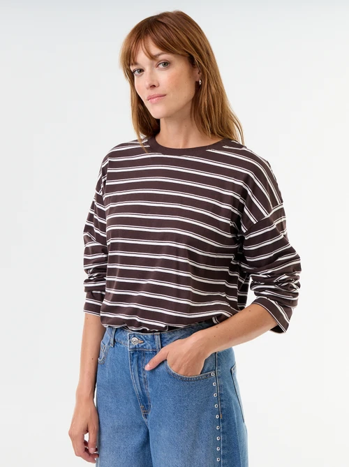
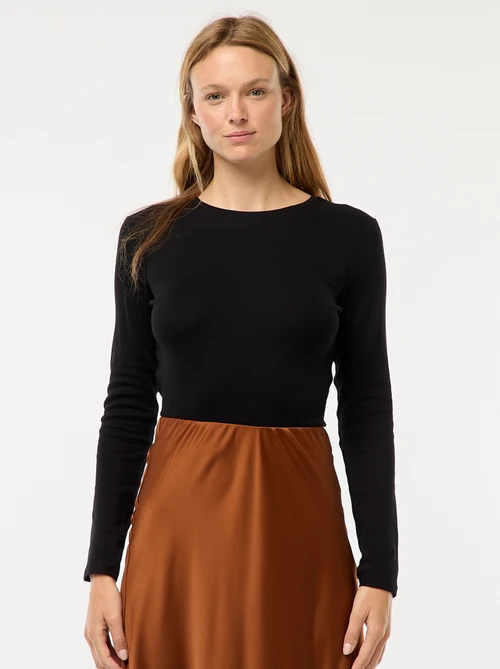
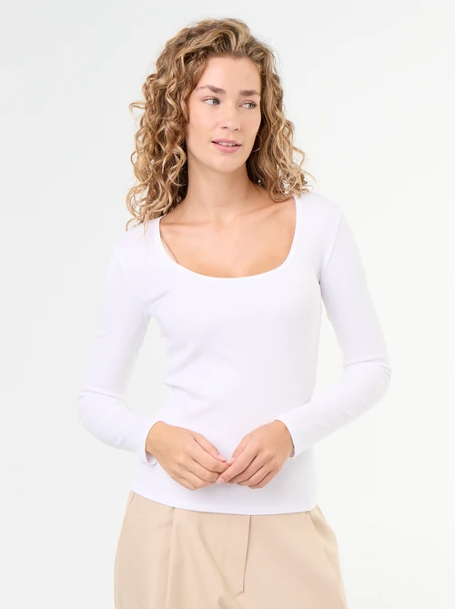
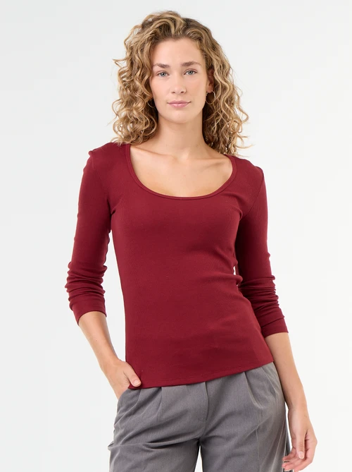

La page source n'affiche que nom, prix et note. Ces puces courtes correspondent à l'attribut product_highlight du flux Merchant Center (identique sur chaque carte de la grille) : un format que les IA shopping reprennent directement en recommandation.





Comment bien choisir un t-shirt femme ?
Matière et coupe : les deux critères qui font la différence, directement depuis la page collection.
Absent de la page source. Ce tableau comparatif correspond à l'attribut document_link : donner accès à une documentation structurée (matière, entretien, saison) plutôt qu'à un simple lien, dans un format qu'un agent IA peut citer directement pour répondre à une question du type « quel t-shirt choisir ».
| Matière | Respirant | Entretien | Saison conseillée |
|---|---|---|---|
| Coton | Élevé | 30°C, séchage libre | Toute l'année |
| Coton biologique | Élevé | 30°C, à l'envers | Toute l'année |
| Viscose | Moyen | 30°C délicat | Mi-saison, tenues habillées |
| Maille côtelée | Moyen | 30°C, à plat | Automne, hiver en superposition |
Visuel à intégrer (ex. zoom matière ou coupe)
Questions fréquentes
Les questions les plus posées avant d'acheter un t-shirt ou un top femme.
Absente de la page source. Chaque question correspond à l'attribut question_and_answer du flux produit, et le bloc est doublé d'un schéma FAQPage : c'est le format que les moteurs IA citent le plus directement en réponse à une question conversationnelle.
Quelle matière choisir pour un t-shirt femme portable toute l'année ?
Le coton reste la matière la plus polyvalente : respirant en mi-saison, il se superpose facilement l'hiver sous une maille ou un blazer. La viscose apporte plus de fluidité et convient mieux aux tenues habillées, tandis que la maille côtelée ou le jersey épais tiennent mieux la forme pour un usage quotidien.
Comment connaître sa taille de t-shirt femme sans l'essayer ?
Le repère le plus fiable est le tour de poitrine pris à l'endroit le plus fort, à comparer au guide des tailles de la marque plutôt qu'à une taille habituelle, car les grilles varient d'une enseigne à l'autre. Pour une coupe oversize, il est courant de prendre une taille en dessous de sa taille habituelle.
Un t-shirt en coton biologique se lave-t-il différemment d'un t-shirt classique ?
Non, l'entretien reste le même : lavage à 30°C, de préférence à l'envers pour préserver la couleur et les impressions, et séchage à l'air libre pour limiter le rétrécissement des fibres naturelles.
Quelle coupe de t-shirt privilégier selon la morphologie ?
Une coupe ajustée met en valeur la taille et convient aux silhouettes en X ou en A. Une coupe oversize ou ample équilibre une silhouette en V ou en O en créant du volume dans le haut. Le col V allonge visuellement le buste, le col rond convient à toutes les morphologies.
Les t-shirts manches longues conviennent-ils pour la mi-saison ?
Oui, un t-shirt manches longues en coton ou en maille fine se porte seul par temps doux et se superpose sous une veste ou un gilet dès que les températures baissent, ce qui en fait une pièce de transition entre l'été et l'hiver.
Toujours présent dans le DOM (donc indexable), sous sa forme d'origine : un titre et des paragraphes de texte SEO, sans mise en forme spéciale. Seul l'affichage change : un aperçu de 3-4 lignes reste visible, le reste se déplie avec « Voir plus » pour ne pas alourdir la page à l'écran.
T-shirt femme : la sélection Kiabi
Le t-shirt reste la pièce la plus portée du vestiaire féminin, aussi bien au quotidien qu'en soirée. Kiabi propose une large gamme de tee-shirts et tops femme, dans des coupes ajustées, amples ou oversize, à porter seuls ou superposés selon la saison.
Côté matières, le coton reste la valeur sûre pour un usage quotidien grâce à sa respirabilité, tandis que la viscose apporte davantage de fluidité pour des tenues plus habillées. La maille côtelée, plus texturée, convient aux coupes près du corps.
La sélection couvre toutes les longueurs de manches, des débardeurs aux modèles manches longues, ainsi que plusieurs encolures (col rond, col V, col bateau) pour s'adapter à toutes les morphologies et toutes les envies.
Disponibles à petit prix, ces tee-shirts et tops femme se déclinent en plusieurs coloris et se renouvellent régulièrement au fil des tendances mode, pour composer facilement de nouvelles tenues sans se ruiner.